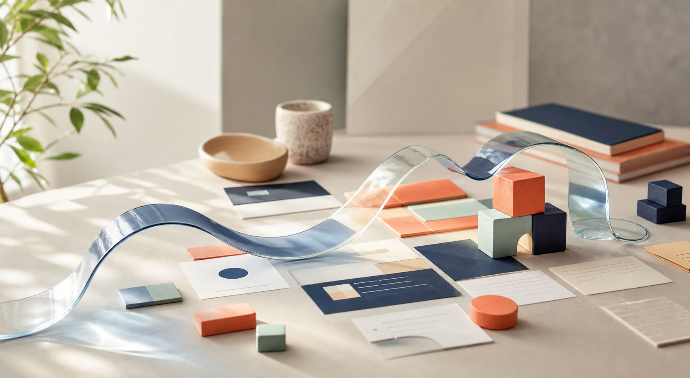

Make the why feel unmistakable.
StoryOne calm place for ambitious work
Make momentum visible.
Kiteframe turns scattered plans into a living view your whole team can follow—from the first bright idea to the work that ships.
Free for 14 days · No credit card · Cancel anytime

Launch plan8 of 12 moving
Everyone alignedUpdated just now
Trusted by focused teams at
North & PineFieldnoteCommon ThreadSunroomBasecamped
Built for the messy middle
From “what if?” to
what’s next.
Plans change. Context moves. Kiteframe keeps the shape of the work clear without forcing your team into another rigid process.
SPRING LAUNCHLaunch week
Momentum68%
PLANNED · 3Finalize launch story Partner briefing
Prep the first ten conversations.
GrowthIN MOTION · 4Homepage polish Welcome sequence
Final pass on words and rhythm.
WebsiteThree emails, one clear next step.
LifecycleLANDED · 7Customer proof Launch metrics
Four stories ready to share.
StoryDashboard and owners confirmed.
DataSee the whole story
Goals, decisions, and daily work stay connected, so nobody has to reconstruct the plan from chat history.
Move without meetings
Short updates roll up automatically. Start the day knowing what moved, what needs help, and why.
Keep your own rhythm
Shape views around your team instead of rebuilding the team around a tool. Simple when you need it, deep when you don’t.
Customer story
“Kiteframe gave us a shared sense of direction without adding another weekly meeting.”
Avery MorganCOO at Fieldnote · fictional customer
6.2hrs
saved per teammate
every month
Start with room to grow
One plan.
No puzzle.
Everything included
$12 per person / month
- Unlimited projects and history
- Automated team pulse
- Guest collaborators
- Friendly human support